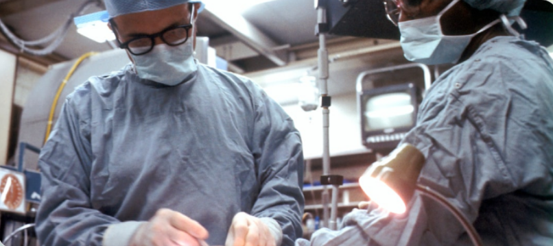

Diagnóstico por Imagen
Tecnología avanzada para diagnósticos precisos y tratamientos efectivos
Tecnología avanzada para diagnósticos precisos y tratamientos efectivos

Contamos con equipos de radiología digital de última generación que nos permiten obtener imágenes de alta calidad en segundos. Esta tecnología reduce significativamente el tiempo de exposición de tu mascota a la radiación y proporciona resultados inmediatos.
Las radiografías digitales pueden ser ampliadas, mejoradas y compartidas fácilmente con especialistas cuando es necesario. Esto agiliza el proceso de diagnóstico y permite tomar decisiones terapéuticas más rápidas y precisas.
Utilizamos la radiología para diagnosticar una amplia variedad de condiciones, desde fracturas óseas hasta problemas cardíacos y respiratorios. Nuestro equipo de radiólogos veterinarios está altamente capacitado en la interpretación de imágenes complejas.
La ecografía es una herramienta diagnóstica no invasiva que nos permite visualizar los órganos internos en tiempo real. Es especialmente útil para evaluar el corazón, abdomen, sistema reproductivo y detectar masas o anomalías.
Nuestros ecógrafos de alta resolución proporcionan imágenes detalladas que ayudan a identificar problemas antes de que se conviertan en emergencias. El procedimiento es completamente indoloro y no requiere sedación en la mayoría de los casos.
Realizamos ecocardiografías especializadas para evaluar la función cardíaca, ecografías abdominales para problemas digestivos y urinarios, y estudios de gestación para monitorear el desarrollo de cachorros y gatitos.
Para casos complejos, contamos con acceso a servicios de tomografía computarizada y resonancia magnética a través de nuestra red de especialistas. Estas tecnologías proporcionan imágenes tridimensionales detalladas de estructuras internas.
La tomografía es particularmente útil para evaluar traumatismos, problemas neurológicos y planificar cirugías complejas. La resonancia es ideal para diagnosticar lesiones de tejidos blandos, problemas cerebrales y de médula espinal.
Coordinamos estos estudios especializados y trabajamos en conjunto con radiólogos veterinarios para interpretar los resultados y desarrollar el mejor plan de tratamiento para tu mascota.